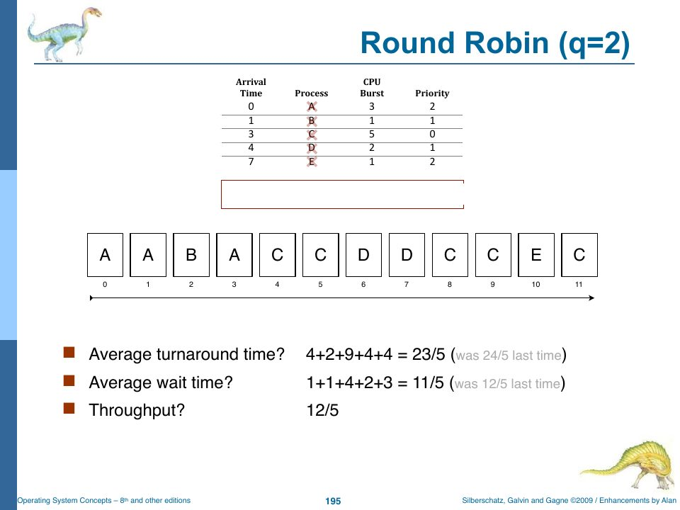
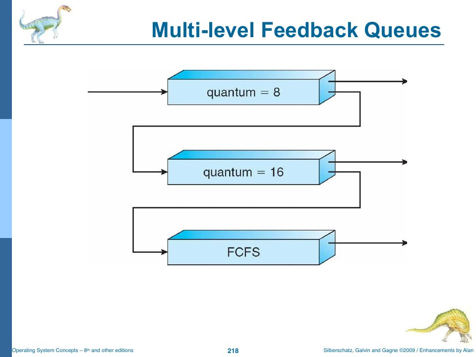

Scheduling Theory, by Hand and by Code
Slides: Chapter 5, “CPU Scheduling (one of my favorite chapters),” pp. 268–490. Lab 010; the scheduling simulation assignment in sim/.
Alan calls Chapter 5 one of his favourites (Lab 011: “It’s probably my favorite chapter in our book”), and it’s the chapter most likely to show up as a pencil-and-paper problem: Lab 010 has no questions except the warning that “a problem exactly like this will be on the mid-term exam.” So this chapter is about the theory, worked exactly the way the slides work it, and checked two ways: by a small TypeScript simulator, and by your own C++ permutation evaluator from the sim/ folder. Chapter 13 then reads rObSen’s scheduler.
Why scheduling matters: bursts
“Process execution consists of a cycle of CPU execution and I/O wait” (slide p. 270). A process computes for a while (a CPU burst), then waits for I/O (an I/O burst), then computes again.
That distribution is the whole case for clever scheduling. If most bursts are short, then letting a short job jump ahead of a long one helps the short job enormously and costs the long one very little.
When scheduling happens, and preemption
The CPU scheduler picks a process from the ready queue whenever one of four things happens (slide p. 274):
- the running process switches to waiting (an I/O request);
- the running process switches to ready (an interrupt, or its time slice expires);
- a waiting process becomes ready (I/O complete);
- the running process terminates.
If scheduling happens only in cases 1 and 4, it’s non-preemptive (or cooperative): a process keeps the CPU until it gives it up. Otherwise it’s preemptive: the OS can take the CPU away. Preemption needs a timer and costs a context switch: “switch from user mode to kernel mode, save state (PCB), load new state (PCB), switch from kernel mode to user mode, begin executing machine language code at PC” (slide p. 275).
The dispatcher is the module that actually hands over the CPU: switching context, switching to user mode, and jumping to the right place in the program. The time it takes is dispatch latency (slide p. 277). In rObSen, the dispatcher is Kernel.dispatchProcess (Chapter 13).
Criteria
All we want, the slides say (p. 285), is to
- maximize CPU utilization and throughput, and
- minimize turnaround time, waiting time, and response time.
“How hard can that be?” These goals conflict, and the slide’s answer is worth remembering: “for interactive systems, overall predictability is more important than achieving any one or other of these criteria in a variable way.”
The definitions you’ll use in every problem (slide p. 284), with arrival, burst, and completion measured in time units:
turnaround = completion − arrival
waiting = turnaround − burst (time spent in the ready queue)
throughput = processes completed / time
Completion is the end of the last time unit the process runs. If a process runs in slots 9, 10, and 11 (counting from 0), it completes at 12.
The example
Almost every algorithm in the slides is run on the same five processes. Memorize this table; it’s the one on the exam.
| Process | Arrival | Burst | Priority |
|---|---|---|---|
| A | 0 | 3 | 2 |
| B | 1 | 1 | 1 |
| C | 3 | 5 | 0 |
| D | 4 | 2 | 1 |
| E | 7 | 1 | 2 |
Twelve units of work in total. Lower priority numbers are more important.
First-come, first-served
“The process that requests the CPU first gets it first… ‘playground rules’” (slide p. 286). A FIFO queue. Easy, and with one big flaw: the average waiting time depends wildly on arrival order. With bursts of 24, 3, 3 arriving in that order, the average wait is (0 + 24 + 27)/3 = 17; in the order 3, 3, 24 it’s (6 + 0 + 3)/3 = 3 (slides pp. 287–299). Short processes stuck behind a long one is the convoy effect.
On the example:
time 0 1 2 3 4 5 6 7 8 9 10 11
A A A B C C C C C D D E
| A | B | C | D | E | Sum | |
|---|---|---|---|---|---|---|
| Completion | 3 | 4 | 9 | 11 | 12 | |
| Turnaround | 3 | 3 | 6 | 7 | 5 | 24 |
| Waiting | 0 | 2 | 1 | 5 | 4 | 12 |
Average turnaround 24/5, average waiting 12/5, throughput 5 processes in 12 units (the slides write “12/5”, meaning 12 units for 5 processes, or 2.4 units per process).
Shortest job first
Run the process with the shortest next CPU burst; break ties FCFS. SJF is provably optimal for average waiting time (slide p. 327). The catch: you have to know the length of the next burst. “Prescience? Future awareness? Psychohistory? Time travel? No. We have data!” (p. 328). Real systems predict it with an exponentially weighted average of past bursts:
τ(n+1) = α · t(n) + (1 − α) · τ(n)
where t(n) is the length of the burst just measured, τ(n) was the prediction for it, and 0 ≤ α ≤ 1 controls how quickly old history fades.
Non-preemptive SJF: once a process starts, it finishes its burst.
time 0 1 2 3 4 5 6 7 8 9 10 11
A A A B D D C C C C C E
At time 3, B (1) beats C (5). At time 4, D (2) beats C. Turnaround 3 + 3 + 8 + 2 + 5 = 21/5; waiting 0 + 2 + 3 + 0 + 4 = 9/5.
Preemptive SJF (also called shortest remaining time first): when a new process arrives with a shorter burst than what’s left of the running one, preempt.
time 0 1 2 3 4 5 6 7 8 9 10 11
A B A A D D C E C C C C
At time 1, B (1) beats A’s remaining 2. At time 7, E (1) beats C’s remaining 4. Turnaround 4 + 1 + 9 + 2 + 1 = 17/5; waiting 1 + 0 + 4 + 0 + 0 = 5/5. The slide’s comment (p. 383): “Preemptive SJF is optimal scheduling. We will never be able to beat this. (But let’s check to be sure.)” The sim/ section below checks.
Priority
Each process has a priority number and the CPU goes to the most important (here, the smallest number), ties broken FCFS (slides pp. 385–386). Priorities can be external (who’s paying, political factors) or internal (measured time, memory, I/O ratio). SJF is a priority scheme where the priority is the predicted burst. The problem is starvation: a low-priority process may never run. The fix is aging: gradually raise the priority of processes that have waited a long time. (The slides’ cautionary tale: a job on MIT’s IBM 7094, submitted in 1967, still hadn’t run when the machine was shut down in 1973.)
Non-preemptive priority:
time 0 1 2 3 4 5 6 7 8 9 10 11
A A A C C C C C B D D E
At time 3, C (priority 0) beats B (1). At time 8, B and D tie at priority 1; FCFS picks B, which arrived first. Turnaround 3 + 8 + 5 + 7 + 5 = 28/5; waiting 0 + 7 + 0 + 5 + 4 = 16/5.
Preemptive priority:
time 0 1 2 3 4 5 6 7 8 9 10 11
A B A C C C C C D D A E
B (1) preempts A (2) at time 1; C (0) preempts A at time 3; D (1) runs before A (2) at time 8; at time 10, A and E tie at 2, and A arrived first. Turnaround 11 + 1 + 5 + 6 + 5 = 28/5; waiting 8 + 0 + 0 + 4 + 4 = 16/5. Same averages as non-preemptive on this data, achieved differently.
Round robin
FCFS with preemption. “Each process gets a unit of CPU time (time quantum)… After this time has elapsed, the process is preempted (via software interrupt) and added to the end of the ready queue” (slide p. 421). With n processes and quantum q, no process waits more than (n − 1)·q before its next turn. This is the algorithm Project Part Three requires.
The slides work RR with q = 2 twice. The first attempt is marked “Wrong.” throughout, because it ignored the ready queue’s order; the second (“It’s later. Let’s do this again, but this time with a look at the Ready Queue”) gets it right. The rule that makes the difference:
time 0 1 2 3 4 5 6 7 8 9 10 11
run A A B A C C D D C C E C
Step by step: A runs 0–1. At time 2 its quantum expires; B (arrived at 1) is already queued, so the queue is B, A; B runs. B finishes at 3. At time 3, C arrives behind A; A runs (its third and last unit). At time 4, D arrives; C runs 4–5. At time 6, C’s quantum expires: the queue is D, C; D runs 6–7. E arrives at 7, behind C. D finishes at 8; C runs 8–9. At time 10 C’s quantum expires: E, C; E runs, then C finishes at 12.
Turnaround 4 + 2 + 9 + 4 + 4 = 23/5; waiting 1 + 1 + 4 + 2 + 3 = 11/5 (slide p. 462).

With q = 5, every process finishes within one quantum, and RR produces exactly the FCFS schedule (slide p. 476: “Wait a second! We’ve seen this before.”). That’s the general rule (p. 478): a quantum that’s too large turns RR into FCFS; a quantum that’s too small spends all its time context switching. The quantum must be large relative to the context-switch time.
The whole story
Checking the table with code
src/code/sims/scheduling.ts is a discrete-time simulator: at each time step it adds arrivals to the ready queue, checks whether the running process should be preempted, dispatches if the CPU is free, and runs one unit. The policy-specific part is just which ready process to pick:
const pick = (): Proc | null => {
if (ready.length === 0) return null;
let best = 0;
for (let i = 1; i < ready.length; i++) {
const a = ready[i], b = ready[best];
if ((policy === "SJF" || policy === "SRTF") && remaining.get(a.id)! < remaining.get(b.id)!) best = i;
if ((policy === "PRIORITY" || policy === "PRIORITY-P") && a.priority < b.priority) best = i;
// FCFS and RR always take ready[0]; ties everywhere fall back to queue order (FCFS).
}
return ready.splice(best, 1)[0];
};
and when to preempt:
if (current) {
const preempt =
(policy === "RR" && used === quantum) ||
(policy === "SRTF" && ready.some((p) => remaining.get(p.id)! < remaining.get(current!.id)!)) ||
(policy === "PRIORITY-P" && ready.some((p) => p.priority < current!.priority));
if (preempt) {
ready.push(current); // back of the line
current = null;
}
}
Run it:
$ tsc --target es2022 scheduling.ts && node scheduling.js
Policy Timeline avgTT avgWT
FCFS A A A B C C C C C D D E 24/5 12/5
NP-SJF A A A B D D C C C C C E 21/5 9/5
P-SJF A B A A D D C E C C C C 17/5 5/5
NP-Pri A A A C C C C C B D D E 28/5 16/5
P-Pri A B A C C C C C D D A E 28/5 16/5
RR q=2 A A B A C C D D C C E C 23/5 11/5
RR q=5 A A A B C C C C C D D E 24/5 12/5
RR q=1 A B A C A D C D E C C C 21/5 9/5
Every row the slides compute matches. (The last row is the answer to an exercise at the end of this chapter.) Notice the comment on step 1 of the loop, “arrivals join the back of the ready queue before any preemption decision”: that’s the ready-queue rule, written as code. And because the simulator always takes the front of the queue for RR, it can never make the slides’ first mistake of dispatching C at time 3 while A is still waiting ahead of it.
Checking optimality with your own simulator
The sim/ folder holds the scheduling assignment: a C++ “CPU Scheduling Permutation Evaluator.” Rather than simulating an algorithm, it enumerates every possible timeline. Given the processes, it builds a string with one letter per unit of work (here AAABCCCCCDDE), then uses std::next_permutation to walk through every distinct rearrangement. A timeline is valid if it never schedules a process before it arrives:
bool checkTimelineValidity(const vector<Process> &processes,
const string &timeline)
{
//timeline is valid if it never tries to schedule a process into a time slot before it has arrived.
for (std::string::size_type time = 0; time < timeline.length(); ++time) {
char currentID = timeline[time];
const Process *matchedProcess = nullptr;
for (const auto &proc : processes) {
if (proc.id == currentID) {
matchedProcess = &proc;
break;
}
}
if (matchedProcess == nullptr) {
if (_DEBUG) {
cout << "Unknown process id '" << currentID << "' in timeline " << timeline << endl;
}
return false;
}
if (matchedProcess->arrivalTime > static_cast<int>(time)) {
return false;
}
}
return true;
}
For each valid timeline, turnaround is (last position of the process + 1) − arrival, and waiting is turnaround − burst.
How many timelines are there? Twelve letters, with A repeated 3 times, C 5 times, and D twice, give the multinomial coefficient
12! / (3! · 1! · 5! · 2! · 1!) = 479,001,600 / 1,440 = 332,640
which is exactly what the program prints (it computes the factorials with tgamma(n + 1), since Γ(n + 1) = n!). The included processes.csv is the slide example, so we can ask the simulator the question the slides raised. Running it and sorting by average turnaround:
1890 Valid Timelines
ABAADDCECCCC: avgTT = 3.400 avgWT = 1.000 ← the only timeline this good
AAABDDCECCCC: avgTT = 3.600 avgWT = 1.200
AABADDCECCCC: avgTT = 3.600 avgWT = 1.200
…
Out of 332,640 permutations, 1,890 are valid, and exactly one achieves 17/5 turnaround and 5/5 waiting: ABAADDCECCCC, the preemptive SJF schedule. Exhaustive search confirms the slide’s claim. “We will never be able to beat this.”
Your write-up for the assignment (Scheduling Simulation Documentation.pdf) draws a nuanced conclusion from the smaller three-process handout dataset, where several timelines tie for the optimum: “SJF is sufficient but not uniquely necessary.” On the five-process dataset, the optimum is unique. And the simulator ignores context-switch cost, which matters: ABAADDCECCCC switches processes six times, while FCFS switches four times.
Beyond single queues
Multilevel queue (slides pp. 481–482): partition the ready queue into several (foreground, background, system), each with its own algorithm, and schedule between queues either by fixed priority (risking starvation) or by time slices (say, 80% foreground RR, 10% system SJF, 10% background FCFS). Processes don’t move between queues.
Multilevel feedback queue (pp. 483–485): processes do move. A typical setup: new jobs enter Q0 (RR, q = 8); a job that uses its whole quantum is demoted to Q1 (RR, q = 16); one that uses that too drops to Q2 (FCFS). Short, interactive jobs stay near the top; long CPU-bound jobs sink. Promotion implements aging. BSD UNIX, macOS, and Windows all do some version of this.

Multiprocessor scheduling (p. 486): asymmetric (one processor runs the scheduler) versus symmetric (each processor schedules itself, from a shared or private ready queue); processor affinity, soft or hard, keeps a process on the core whose cache is warm with its data.
Other schemes (pp. 488–489): lottery scheduling (give each process tickets and draw a winner; more tickets for short jobs approximates SJF, and everyone getting at least one ticket prevents starvation); earliest deadline first (“Student Scheduling”); and Linux-style credits (“quantum expiration costs a credit… if no process has any credits left then the kernel issues more”).
Check yourself
- Redo RR with q = 1 on the example. (Answer below.)
- Why do preemptive and non-preemptive priority give the same averages here even though their timelines differ?
- Using α = 0.5 and an initial prediction of 10, predict the next burst after measured bursts of 6, 4, 6, 4.
Answers
A B A C A D C D E C C C. Completions: A 5, B 2, C 12, D 8, E 9. Turnaround 5 + 1 + 9 + 4 + 2 = 21/5; waiting 2 + 0 + 4 + 2 + 1 = 9/5. (The simulator’s last row.) Interesting: with q = 1, RR ties non-preemptive SJF on this data.- Total turnaround is Σ completion − Σ arrival, and the arrivals are fixed. Non-preemptive priority completes A, C, B, D, E at 3, 8, 9, 11, 12; preemptive completes B, C, D, A, E at 2, 8, 10, 11, 12. Both sum to 43, so total turnaround is 43 − 15 = 28 either way, and total waiting (turnaround minus the fixed total burst of 12) is 16 either way. Different processes are favoured; the totals happen to agree.
- τ₁ = 0.5·6 + 0.5·10 = 8; τ₂ = 0.5·4 + 0.5·8 = 6; τ₃ = 0.5·6 + 0.5·6 = 6; τ₄ = 0.5·4 + 0.5·6 = 5.